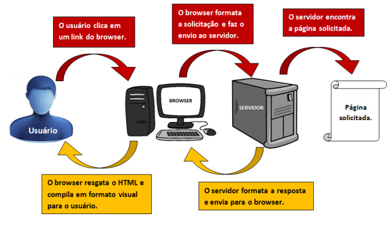
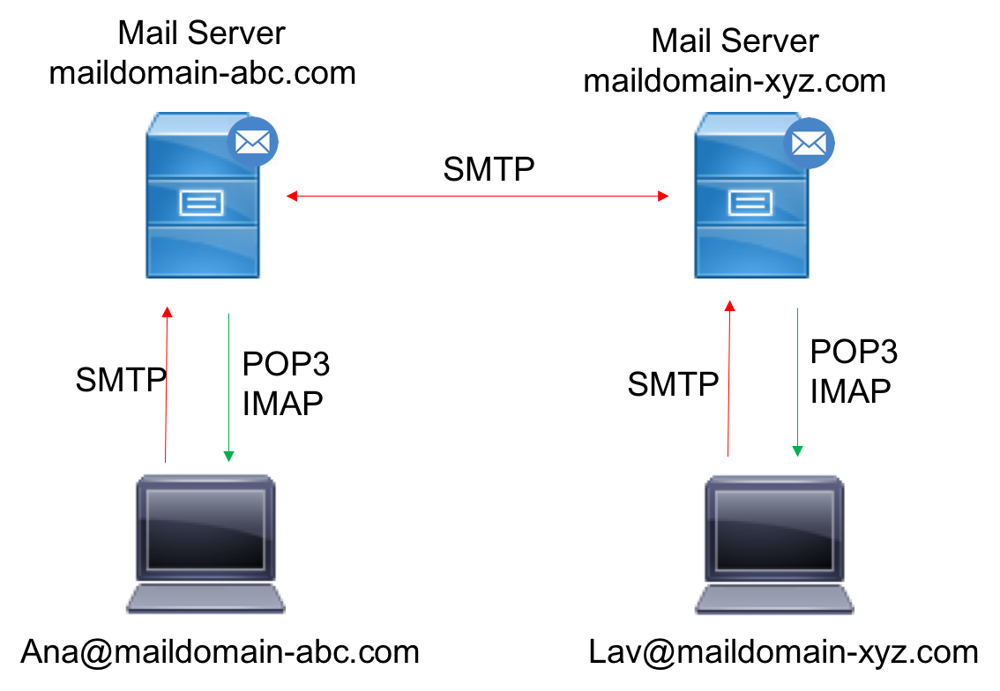
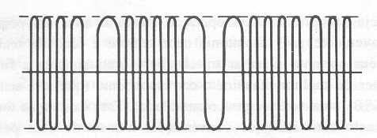
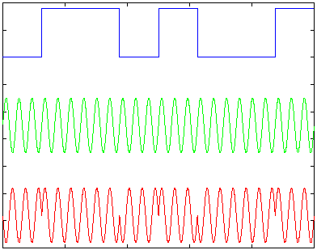

Como nos conectamos a internet
A verdade é que o funcionamento da internet não é tão simples e fácil quanto conectar-se a ela.
Ao mesmo tempo em que você está conectado, outras bilhões de pessoas também estão
conectadas a bilhões de outras coisas. E isso tudo acontece na base do acordo, que é como
funciona a internet: todos precisam concordar em seguir as mesmas regras. Há anos, o Brasil já
faz parte dessa rede mundial de redes de computadores, que no total, liga quase 40 milhões de
pessoas no país.
Quando você conecta dois computadores, você tem uma rede (network). Se um
amigo seu conecta mais outros dois computadores, ele cria outra rede (network). Se vocês
concordam em funcionar sob as mesmas regras, vocês podem conectar ambas as redes. Duas
networks conectadas representam uma internetwork, ou internet. As regras são chamadas de
protocolo internet. E, entrando em acordos, várias redes são formadas, até que todo o planeta
esteja conectado. A internet é, portanto, uma rede de redes compartilhadas.
O acesso à internet
de modo externo se dá quando a sua rede local se conecta a outra rede maior, no caso, o seu
provedor de internet, por meio da tecnologia TCP/IP, um modo de comunicação baseado no
endereço de IP (Internet Protocol). Este IP é o endereço de cada um dos pontos de uma rede,
e cada ponto da rede consiste em um computador que, por sua vez, se interliga a outros
computadores, formando o que se chama de “teia de redes”.


Como as redes se conectam
Para conectar as redes, existem milhões de cabos de fibra óptica espalhados pelo mundo.
Existem cabos instalados até embaixo dos oceanos, ligando um continente a outro. Antes
de chegar ao seu computador a informação passa por diversos pontos, literalmente dá a
volta ao mundo em alguns casos, dependendo de onde o servidor com as informações está
localizado. Nesse caminho, elas são quebradas em diversas partes e, no fim do percurso, o
seu computador se encarrega de reunir todos os pedaços para formar o conteúdo que você
vê aí no seu monitor.
Para entender melhor, quando você envia uma mensagem qualquer
(imagem, vídeo, áudio ou texto) do seu dispositivo para outro, essa mensagem é dividida
em várias partes e essas partes são chamadas de pacotes de dados. Cada um desses
pacotes toma um caminho diferente para chegar ao seu destino. Por conta do protocolo, o
dispositivo que recebe a mensagem sabe como juntar tudo de novo e formar a mensagem original.

Mas como as mensagens vão de uma rede para outra, ou seja, de dispositivos localizados
em provedores diferentes? Algumas companhias fazem ligações privadas entre si, mas o mais
comum atualmente é que as mensagens trafeguem entre plataformas compartilhadas de serviço,
chamadas de pontos de troca de tráfego (PTTs), onde várias empresas diferentes podem
interligar-se e compartilhar suas tecnologias. Qualquer empresa, como provedores, redes sociais,
empresas de comunicação e ainda outras podem se conectar nesses pontos e se beneficiar da troca
de tráfego, além de reduzir custos e ter um tráfego mais rápido.
No mundo inteiro são enviados cerca de 90 trilhões de e-mails por dia. São aproximadamente
234 milhões de sites e 126 milhões de blogs. Para que tanta informação possa continuar existindo
e se expandindo, foi criado um novo formato de identificação de cada conteúdo e usuário na web,
o chamado IPv6, pois o atual formato, o Ipv4, está quase sem combinações possíveis. Deu para
perceber que o funcionamento da internet não é tão simples quanto conectar-se a ela, não é mesmo.

As operadoras comercializam diversas velocidades de internet, desde as velocidades mais
populares até as mais rápidas possíveis. Mas, nem sempre o usuário recebe a velocidade de internet
que contratou, por isso, é muito recomendável realizar um teste de velocidade sempre que possível,
para constatar se você está recebendo a velocidade de conexão que contratou.
Modulação e Demodulação
Modulação
Modulação é o processo de variação de altura (amplitude), de intensidade, frequência, do comprimento
e/ou da fase de onda numa onda de transporte, que deforma uma das características de um sinal portador
(amplitude, fase ou frequência) que varia proporcionalmente ao sinal modulador.
Modulação em Amplitude
ou simplesmente AM , é a forma de modulação em que a amplitude de um sinal senoidal, chamado portadora,
varia em função do sinal de interesse, que é o sinal modulador. A frequência e a fase da portadora
são mantidas constantes.

Demodulação
É o processo que nos permite reverter o processo da modulação. Também chamado de detecção, envolve
dispositivos eletrônicos, chamados modems, encarregados de detectar a onda portadora modulada e extrair
dela o sinal modulante. Assim como a modulação linear implica em translação do espectro de mensagem
para adiante, a demodulação implica na translação inversa, a fim de se recuperar a mensagem original
que está contida
no sinal modulado.
Existem duas categorias de demodulação: os detectores síncronos e os A conversão em frequência começa
com a multiplicação por uma senoide como, por exemplo, quando o
sinal DSB [ou seja, x(t)cosω1t ] é
multiplicado por cosω2t:
O produto consiste de frequências soma (f1+f2) e diferença (|f1−f2|), cada qual
modulada por x(t).
Assumindo que f2 ≠ f1, a multiplicação translada o espectro do sinal x(t) para duas novas
frequências
portadoras.
Esta operação é chamada de heterodinagem ou mixing.detectores de envoltória.
A conversão em frequência começa com a multiplicação por uma senoide como, por exemplo, quando o
sinal
DSB [ou seja, x(t)cosω1t ] é multiplicado por cosω2t:
O produto consiste de frequências soma (f1+f2) e diferença
(|f1−f2|), cada qual modulada por x(t).
Assumindo que f2 ≠ f1, a multiplicação translada o espectro do sinal x(t) para duas novas frequências
portadoras.
Esta operação é chamada de heterodinagem ou mixing.

Como funciona HTML & CSS
HTML, CSS JavaScript = Front-End
O servidor apenas ira mandar o arquivo para voce, o seu navegador será responsavel
por ler e organizar para voce
O Web Designer é o profissional responsavel por desenhar o site da melhor forma,
já o desenvolvedor irá fazer a "mágica" fazer o site funcionar
- Front-End é mais ligado com o usuario
- Back-End é mais ligado ao codigo rodar
Comandos HTML
H1 - titulo
P - paragrafo, texto comentario etc
HR - Cria uma linha horizontal
! - Insere a configuração "META CHARSET UTF-8
BR - Quebra da linha de texto
imagem em um site
Para web normalmente usavamos os formatos JPEG e PNG basicamente,
a usar os 2 depende do que voce quer
JPEG consegue compactar uma imagem - é melhor para compactar imagens
PNG Substituiu o GIF, alta compactação e permite transparencia
A imagem não pode pesar no seu site, para que o google encontre com mais
facilidade
O software GIMP que é gratuito ajuda a redimensionar imagens e deixar ela
com tamanho X peso menor
A tag img em HTML5
Ao digitar a tag img no espaço entre aspas aperte as teclas "CTRL + SPACE"
irá mostrar os arquivos presentes na pasta do exercicio aberto.
Quando digitar a tag img logo aperte a tecla enter automaticamente irá escrever
o comando completo.
é possivel adicionar imagens externas da propria internet apenas copiando o link
da imagem é importante que a imagem seja de tamanho e peso pequeno
Porem se o servidor no qual a imagem está hospedada ou a imagems for removida
ela não sera exibida em seu site
Listas OL e UL
Ordered List, listas ordenas é a ordem dos itens é muito importante. Um passo a passo para criar um bolo, lista de aprovados, lista de carros para criar uma lista faça:
Lista não ordenadas
Unordered Lists, são aquelas onde a ordem dos itens não influenciara no significado da lista... Se escreve o codigo apenas mudando a TAG LO para UL o corpo é o mesmo
- item1
- item2
- item3
- item4
Links para download
- PDF
- baixar pdf
- baixar pdf
- baixar pdf
- Python
- Visual G
- JavaScript
- Java